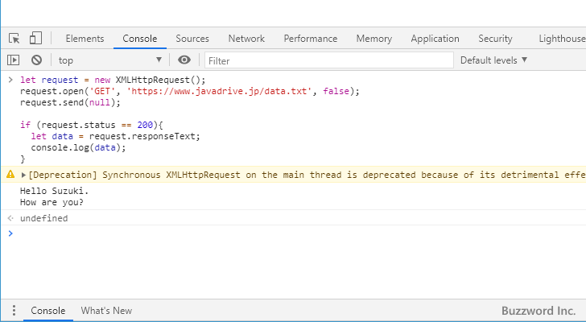

XMLHttpRequestオブジェクトを使った同期通信を行う
XMLHttpRequest オブジェクトを使用することで非同期だけではなく同期通信をを行うことができます。ここでは XMLHttpRequest オブジェクトを用いた同期通信を行う場合の手順について解説します。
同期通信を行う手順
同期通信の場合も XMLHttpRequest オブジェクトの作成から開始します。作成にはコンストラクタを使い次のように行います。
let request = XMLHttpRequest();
続いて XMLHttpRequest オブジェクトの open メソッドを使って HTTP リクエストの初期化を行います。(なお open メソッドをはじめ使用しているメソッドは非同期通信の場合と同じです。各メソッドやプロパティに関する書式について詳細は「XMLHttpRequestオブジェクトを使った非同期通信を行う」をご参照ください)。
今回はサンプルとして指定した URL にあるテキストファイルを GET メソッドを使って同期でサーバから取得してみます。次のように記述します。
let request = new XMLHttpRequest();
request.open('GET', 'https://www.example.com/data.txt', false);
同期通信を行う場合には、 open メソッドの 3 番目の引数に false を指定する点に注意してください。
続いて XMLHttpRequest オブジェクトの send メソッドを使ってサーバにリクエストを送信します。
let request = new XMLHttpRequest();
request.open('GET', 'https://www.example.com/data.txt', false);
request.send(null);
非同期通信の場合と異なり、同期通信の場合は send メソッドを実行したあと、サーバからのレスポンスが全て帰ってくるまで処理が止まります。すべてのレスポンスを受信したら次の処理に移りますので HTTP ステータスコードを確認したあとで受信したデータを取り出します。
let request = new XMLHttpRequest();
request.open('GET', 'https://www.example.com/data.txt', false);
request.send(null);
if (request.status == 200){
let data = request.responseText;
console.log(data);
}
これで同期通信は完成です。非道的通信との違いは、データを取得する処理を記述する位置を send メソッドのあとに記述している点と、イベントハンドラを利用していない点です。その分シンプルになっていますが、同期通信の場合はレスポンスを受信し終わるまで他の処理が止まってしまいます。
コンソールを使ったテスト
それでは同期通信で実際にデータを取得してみます。サーバのルートディレクトリに次のような テキストを入力した data.txt というファイルを作成しアップロードしておきます。
Hello Suzuki. How are you?
次にブラウザでリクエストを送信する URL と同じ URL のいずれかのページにアクセスしたあとで、コンソールを開き次のように実行してください。
let request = new XMLHttpRequest();
request.open('GET', 'https://www.example.com/data.txt', false);
request.send(null);
if (request.status == 200){
let data = request.responseText;
console.log(data);
}
>> Hello Suzuki.
>> How are you?

open メソッドの引数に指定した URL が示すファイルに記述された内容をテキストデータとして取得し、コンソールに出力しました。
なお次のような警告が表示されています。
[Deprecation] Synchronous XMLHttpRequest on the main thread is deprecated because of its detrimental effects to the end user's experience. For more help, check https://xhr.spec.whatwg.org/.
(訳)メインスレッドでの XMLHttpRequest を使った同期通信は、エンドユーザーエクスペリエンスに悪影響を与えるため、非推奨になりました。 詳細については https://xhr.spec.whatwg.org/ を確認してください。
同期通信は受信が完了するまで処理が止まってしまうため、非推奨になっているようです。
-- --
XMLHttpRequest オブジェクトを用いた同期通信を行う場合の手順について解説しました。
( Written by Tatsuo Ikura )

著者 / TATSUO IKURA
初心者～中級者の方を対象としたプログラミング方法や開発環境の構築の解説を行うサイトの運営を行っています。